Telemetria¶
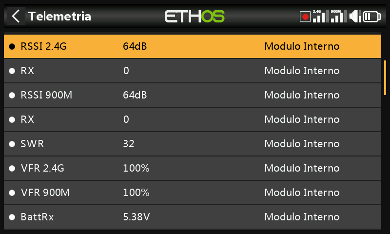
La telemetria trasmette le informazioni dal modello al pilota — qualità del collegamento (RSSI, VFR), tensioni e correnti, e qualsiasi altro dato riportato da un sensore collegato (posizione GPS, altitudine e così via). Sono supportati fino a 100 sensori per modello; il rilevamento e la configurazione avvengono qui, ma la telemetria viene effettivamente visualizzata tramite widget delle schermate di display, configurati separatamente in Configura schermate.
Come funziona la telemetria FrSky¶
I sensori FrSky non richiedono un hub: Smart Port (S.Port) è un bus a 3 fili (Gnd, V+, Segnale), collegabile a margherita in qualsiasi ordine alla connessione S.Port dei ricevitori serie X/S e successivi, che opera in half-duplex a 57.600 bps (F.Port e FBUS sono più veloci).
- Physical ID — fino a 28 nodi (ricevitore incluso) condividono il bus, ciascuno con la necessità di un Physical ID univoco (00–1B esa). I dispositivi FrSky sono forniti con valori predefiniti sensati (es. Vario = 00, FLVSS = 01, Current = 02, GPS = 03) — se si collegano due dispositivi identici, il Physical ID del secondo deve essere modificato tramite Device Config.
- Application ID — indipendente dal Physical ID: un singolo sensore
può riportare più valori, ciascuno con il proprio Application ID. Un
Vario ha un solo Physical ID ma due Application ID (Altitudine,
Velocità verticale); un FLVSS ha un Physical ID e un Application ID
(Tensione). Monitorare due pacchi 6S con due sensori FLVSS significa
modificare entrambi gli ID sul secondo — il Physical ID per la
comunicazione esclusiva sul bus, l'Application ID affinché il
ricevitore possa distinguere Lipo 1 da Lipo 2 (es.
0300→0301). Normalmente si varia la 4ª cifra esadecimale, 0–F.
!!! note Sensori che condividono un Application ID ma con Physical ID differenti sono ammessi solo con il rilevamento dei conflitti tra sensori disattivato — una configurazione per usi particolari, non il caso predefinito.
Ogni valore ricevuto viene gestito come sensore a sé stante: valore, Physical/Application ID, un nome modificabile, unità, precisione decimale, un flag opzionale di registrazione su SD card e i propri min/max progressivi. Una volta configurati, i sensori vengono rilevati automaticamente a ogni accensione, ma la prima volta il rilevamento deve essere manuale. Una volta rilevato, un sensore può essere annunciato vocalmente, utilizzato in sensori calcolati, in interruttori logici, Vars o mix, mostrato su una schermata di telemetria personalizzata, oppure letto direttamente da questa pagina di configurazione senza realizzare alcuna schermata.
FBUS (in precedenza F.Port2) rappresenta un ulteriore avanzamento, riunendo il controllo SBUS e la telemetria S.Port su un'unica linea a 460.800 bps (contro i 115.200 di F.Port e i 57.600 di S.Port — le tre velocità sono reciprocamente incompatibili) e consentendo a un host di dialogare con più accessori slave su quella singola linea, tutti configurabili senza fili dalla radio.
Telemetria multi-ricevitore (ACCESS Trio)¶
Con un massimo di tre ricevitori registrati in RF System, ogni ricevitore connesso può essere configurato individualmente (pin delle porte, ecc.) tramite RX1/RX2/RX3. Normalmente esiste un solo percorso di telemetria in ingresso per collegamento RF — i sistemi Tandem/TD costituiscono l'eccezione, utilizzando 2.4GHz e 900MHz come due percorsi su un unico modulo. La sorgente di telemetria attiva può cambiare durante il volo a seconda delle condizioni RF; il sensore RX indica in tempo reale quale ricevitore sta inviando la telemetria (e lo registra).
La configurazione tipica: collegare a margherita il bus sensori S.Port su tutti e tre i ricevitori, condividendo un'alimentazione comune, quindi registrare/connettere ciascun ricevitore e rilevare i sensori normalmente — la sorgente di telemetria commuta automaticamente al variare dell'RX attivo, e i dati dei sensori S.Port esterni seguono in modo trasparente. (I sensori interni al ricevitore — RSSI, VFR, RxBatt, ADC2, RX stesso — non si collegano in questo modo; vengono sempre riportati per il ricevitore che è attualmente la sorgente. La telemetria simultanea da tutti e tre è prevista ma non ancora disponibile.)
Sensori di qualità del collegamento¶
- RSSI (Receiver Signal Strength Indicator) — quanto è forte la trasmissione del modello al ricevitore. Allarmi predefiniti: ACCESS/TD/TW 35 (basso) / 32 (critico), perdita di controllo attorno a 28; ACCST 45 / 42, perdita di controllo attorno a 38. "Telemetria persa" viene segnalato quando il collegamento è del tutto assente — a quel punto non può suonare alcun ulteriore allarme, poiché la radio non dispone più di telemetria da valutare; va interpretato come un invito a rientrare immediatamente. (A meno di ~1 m di distanza, il ricevitore può saturarsi e produrre cicli spuri di allarmi Persa/Ripristinata — non si tratta di un guasto reale.) L'RSSI approssima bene la portata effettiva, ma il VFR è l'indicatore di qualità del collegamento più affidabile.

I ricevitori TD riportano un RSSI per banda (2.4G, 900M); anche i ricevitori TW ne riportano uno per banda (2.4FSK, 2.4LoRa, 900M) — attivare Individual RSSI alert per band per ottenere avvisi vocali separati per ciascuna banda anziché un unico avviso combinato:
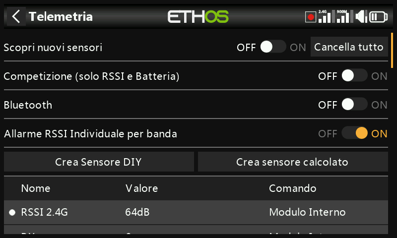
- VFR (Valid Frame Rate) — pacchetti validi ogni 100 ricevuti; a partire da ACCESS 2.1 sostituisce l'inclusione del tasso di frame persi nell'RSSI. Il valore predefinito di Low value warning è 50%.
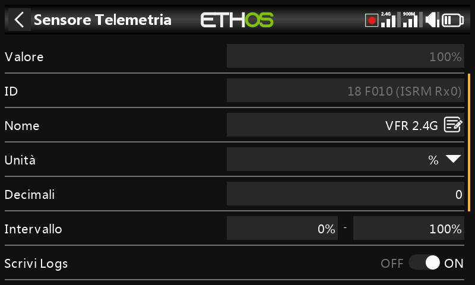
I ricevitori TD/TW riportano due flussi VFR (uno per banda); Rx VFR (sui ricevitori TD/TW/AP/AP Plus) conta invece ogni frame valido indipendentemente dalla banda su cui è arrivato — è quello da monitorare se si vuole seguire un unico valore VFR.
- RxBatt — tensione della batteria del ricevitore.
- ADC2 — un secondo ingresso analogico di tensione, sui ricevitori che lo supportano.
- SWR — SWR d'antenna, quando si utilizza un'antenna esterna.
- Sensori di assetto/movimento, dove supportati: R.Angle, P.Angle, AccX/Y/Z.
Ogni sensore numerico dispone inoltre automaticamente di sensori min/max
<name>-/<name>+, anche se non compaiono nell'elenco principale dei
sensori.
Rilevamento dei sensori¶
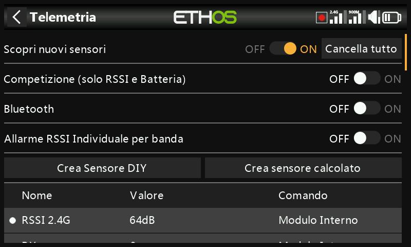
Con tutto connesso e alimentato, attivare Discover new sensors — un punto lampeggiante (o un valore in rosso, se non ci sono ancora dati) contrassegna ciascun sensore man mano che viene individuato, e la schermata si popola automaticamente. L'operazione va ripetuta per ogni modello, e nuovamente ogni volta che si aggiunge un nuovo sensore.
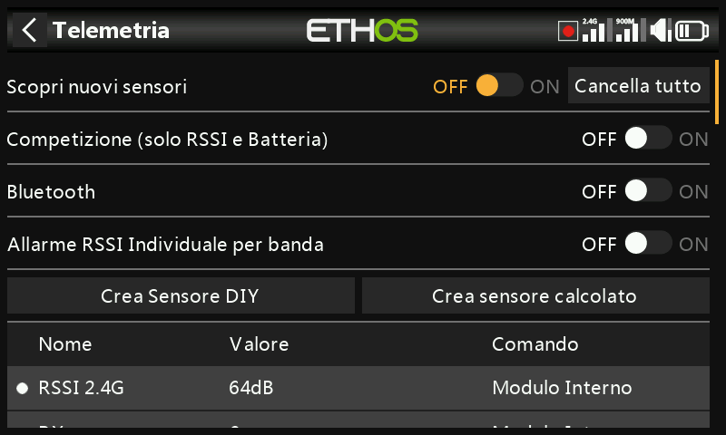
- Riportare il rilevamento su Off una volta terminato.
- Delete all cancella tutti i sensori per ricominciare da capo.

- Competition mode riduce la telemetria ai soli RSSI e RxBatt — per le gare che ammettono solo sensori di stato del collegamento. La disattivazione richiede un riavvio della radio prima di poter rilevare nuovamente i sensori.
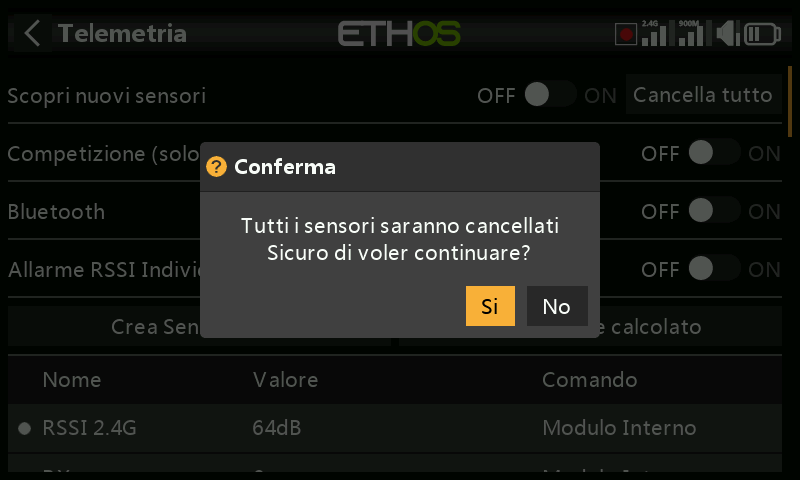
- La modalità di telemetria Bluetooth si accoppia con l'app per smartphone FrSky FreeLink, che può visualizzare la telemetria in tempo reale e configurare dispositivi FrSky come i ricevitori stabilizzati.

Modifica di un sensore¶
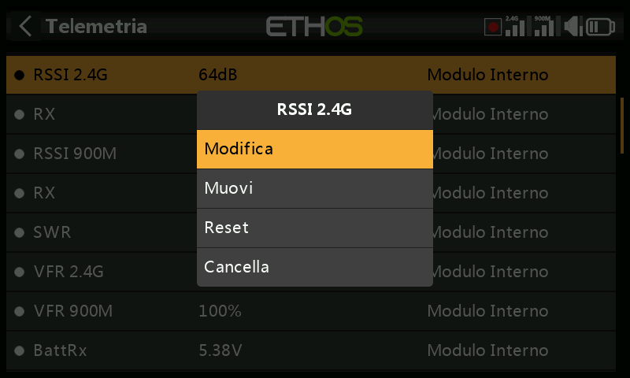
Toccare un sensore per Edit, Move, Reset o Delete. Campi comuni: Value (sola lettura), ID (Physical + Application ID e ricevitore che trasmette), Name, Unit, Decimals, Range (limiti di scala fissi — rilevanti soprattutto quando il sensore è utilizzato come sorgente di canale), Write logs, Reset (una sorgente che azzera questo sensore) e Sensor lost warning delay (disattivabile del tutto, oppure 1–30 s, predefinito 10 s, per filtrare brevi interruzioni — occorre comprendere il rischio di impostarlo troppo alto; il messaggio "sensore perso" viene riprodotto una sola volta anche se molti sensori vengono persi contemporaneamente; disattivato per impostazione predefinita per i sensori interni al ricevitore, dato che raramente vengono a mancare).
Alcuni sensori aggiungono campi propri:
- ADC2 — Ratio e Offset, per correggere la scala.
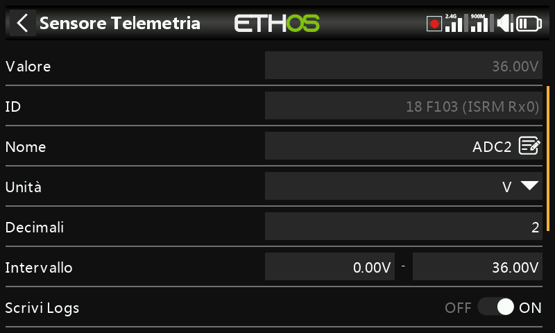
- RSSI — soglie Critical value e Low value warning.
- VFR — Low value warning (predefinito 50%).
- VSpeed (velocità verticale del vario) — Range fino a ±100 m/s (predefinito ±10 m/s). Il comportamento audio del vario si configura ora nella funzione speciale Play Vario, non qui.
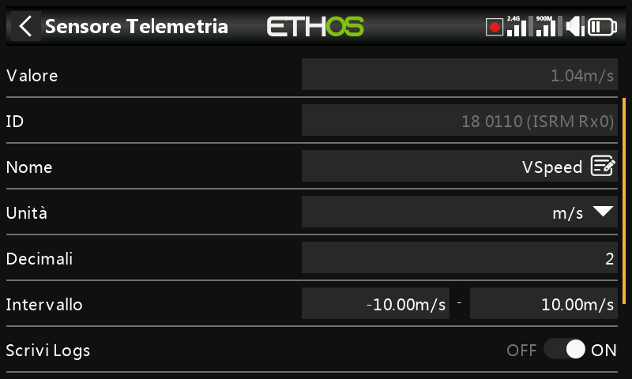
Sensori DIY / di terze parti¶

Create DIY Sensor consente di aggiungere manualmente un sensore non FrSky: Auto detect (compila automaticamente Physical ID, Application ID e Module, se possibile), oppure impostarli manualmente, insieme a Protocol decimals/unit (precisione in ingresso, 0–3 decimali, e relativa unità nativa) e Display decimals/unit (indipendenti da quelle del protocollo), oltre agli stessi campi Range/Ratio/ Offset/Write logs/Reset/Sensor lost warning delay di qualsiasi altro sensore.

Sensori calcolati¶
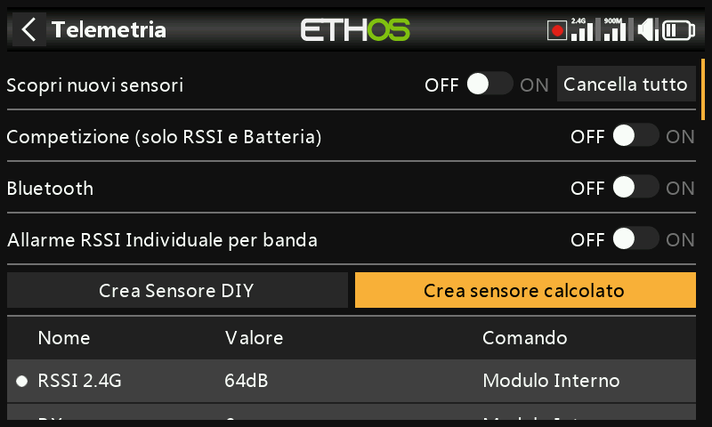
Permettono di derivare un nuovo sensore da uno o più sensori esistenti:
- Consumption — energia consumata, integrata da un sensore di corrente (es. serie FAS). Unità mAh/Ah, portata fino a 1000 Ah.

- Distance — da una sorgente GPS (più una sorgente di altitudine, per la distanza 3D). Unità cm/m/km/ft, fino a 20 km.
- Trip — distanza accumulata tra rilevamenti GPS successivi. Stesse unità, fino a 1000 km.

- Multi Lipo — mette in cascata due o più sensori di tensione Lipo per monitorare pacchi superiori a 6S (fino a 67,2 V/8S). Selezionare ciascun sensore di cella dal più basso al più alto; ogni sensore Lipo aggiuntivo richiede la modifica preventiva del Physical e dell'Application ID in Device Config (lo strumento Lipo Voltage presente lì è d'aiuto), il rilevamento uno alla volta e la rinomina in modo che siano distinguibili.
- Percent — riscala un sensore su 0–100%, con un'opzione Invert (ad esempio per mostrare la percentuale residua anziché quella consumata).
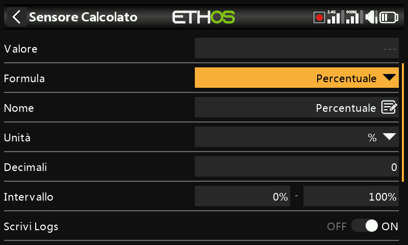
- Power — potenza in watt da una coppia di sorgenti Current e Voltage, fino a 1.000.000 W.

- Custom — una formula arbitraria concatenata a partire da una o più sorgenti.
Ogni sensore calcolato dispone inoltre dell'opzione Persistent (sopravvive allo spegnimento/cambio di modello e viene ricaricato all'uso successivo) e di un pulsante Reset direttamente nella schermata di modifica.
Sensori personalizzati¶
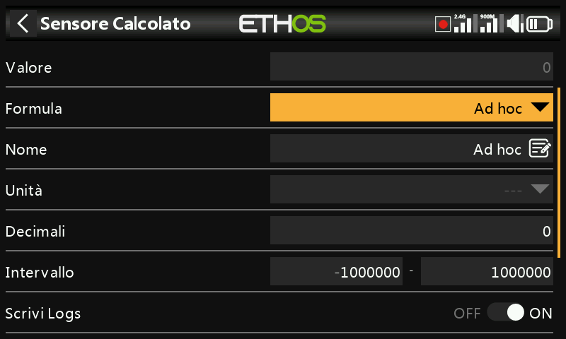
Si parte da una sorgente, quindi Add concatena ulteriori operazioni: Add(+), Minus(-), Multiply(×), Divide(/), Min, Max, Sqrt. Le unità sono selezionabili da un lungo elenco che comprende tensione, corrente, capacità, potenza, distanza, velocità, tempo, temperatura, percentuale, angoli, pressione e altro ancora; portata da −1.000.000 a 1.000.000, 0–4 decimali.
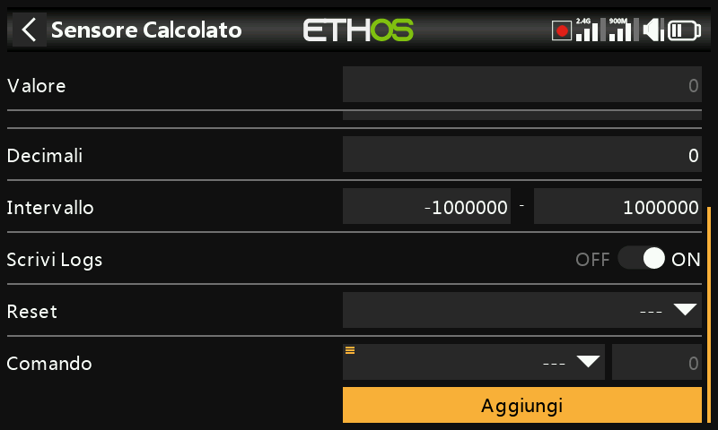
Potenza di picco
Moltiplicare un sensore di tensione (VFAS) per un sensore di
corrente (Current), quindi aggiungere un passaggio Max che
faccia riferimento al valore corrente del sensore stesso
(MaxPower) per tracciare la lettura più alta rilevata — 288 W in
questo esempio:
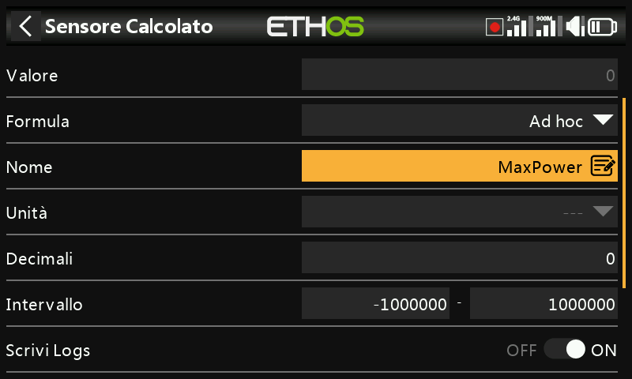
Operazione aritmetica con una costante
Sorgente impostata su RSSI 2.4G (lettura 64 dB), quindi un'azione
Subtract la cui sorgente viene selezionata con pressione
prolungata applicando Convert to value, trasformandola in una
costante modificabile (20) anziché in una sorgente dal vivo — il
risultato è un valore stabile di 44 dB (64 − 20):
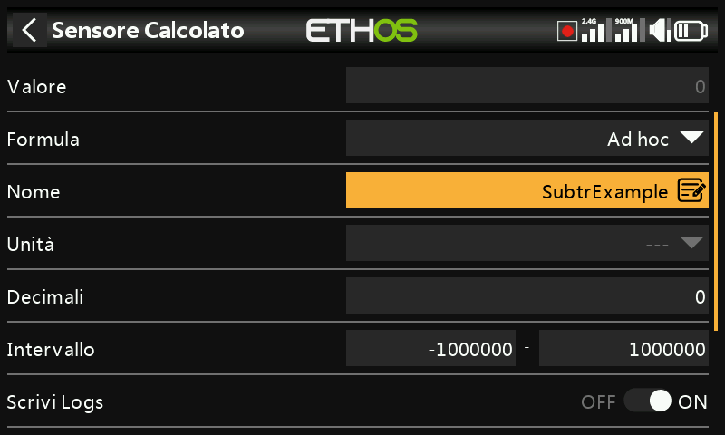
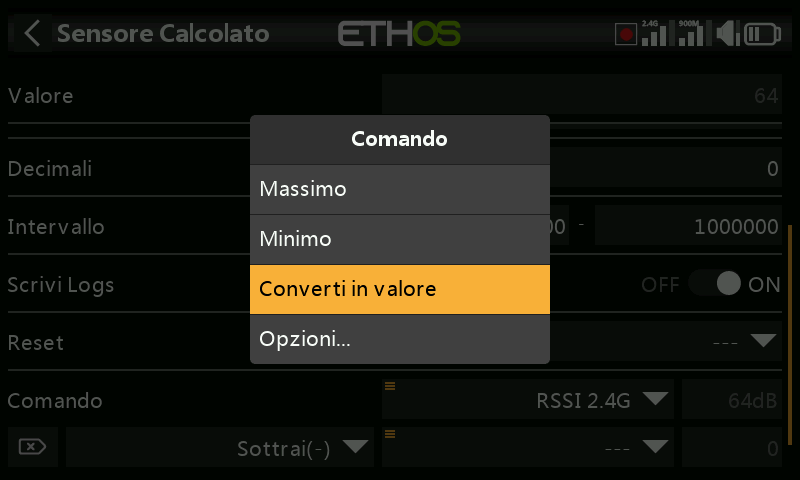
Il valore interno di una sorgente
Ogni sorgente ha un intervallo interno intero di ±1024 corrispondente al suo intervallo visualizzato di ±100% — visibile direttamente puntando un sensore Custom, ad esempio, su Gas: il gas al massimo legge internamente +1024, il gas al minimo legge −1024.
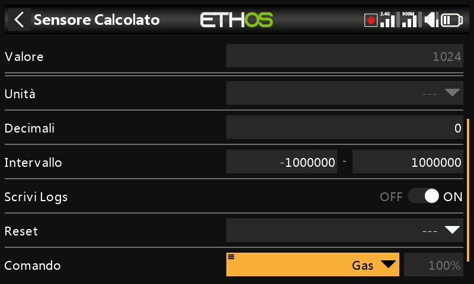